GPBR 112 :: Lecture 30 :: SEED STORAGE

Maintenance of seed vigour and viability in terms of germination from harvest until planting is of the utmost importance in any seed production programme. Care should be taken at every stage of processing and distribution to maintain the viability and vigour. The harvested seeds of most of the orthodox crop seeds are usually dried and stored for atleast one season until the commencement of the next growing season, except those of the recalcitrant seeds which require high moisture content for safe storage (once dried the viability will be lost. E.g. – Jack, Citrus, Coffee, Cocoa, Polyalthea, etc.,). In such recalcitrant seeds senescence starts in the mother plant itself. The dry weather alters moisture content of the seed, thereby reducing the viability. Some seeds require an after ripening process as in Pinus and Fraxinus. In most of the Agricultural crops ageing starts at physiological maturity, which is irreversible. Hence seeds become practically worthless if they fail to give adequate plant stands in addition to healthy and vigorous plants. Good storage is therefore a basic requirement in seed production.
Purpose of seed storage
Seeds have to be stored, of course, because there is usually a period of time between harvest and planting. During this period, the seed have to be kept somewhere. While the time interval between harvest and planting is the basic reason for storing seed, there are other considerations, especially in the case of extended storage of seed.
The purpose of seed storage is to maintain the seed in good physical and physiological condition from the time they are harvested until the time they are planted. It is important to get adequate plant stands in addition to healthy and vigorous plants.
Seed suppliers are not always able to market all the seed they produce during the following planting season. In many cases, the unsold seed are “carried over” in storage for marketing during the second planting season after harvest. Problems arise in connection with carryover storage of seed because some kinds, varieties and lots of seed do not carryover very well.
Seeds are also deliberately stored for extended periods so as to eliminate the need to produce the seed every season. Foundation seed units and others have found this to be an economical, efficient procedure for seeds of varieties for which there is limited demand. Some kinds of seeds are stored for extended periods to improve the percentage and rapidity of germination by providing enough time for a “natural” release from dormancy.
Regardless of the specific reasons for storage of seed, the purpose remains the same maintenance of a satisfactory capacity for germination and emergence. The facilities and procedures used in storage, therefore, have to be directed towards the accomplishment of this purpose.
STAGES/SEGMENTS OF SEED STORAGE
In the broadest sense the storage period for seed begins with attainment of physiological maturity and ends with resumption of active growth of the embryonic axis, i.e., germination.
The entire storage periods can be divided into:
1 |
Post maturation/ |
Period from physiological maturity to harvest (seed in field). |
2 |
Bulk seed segment |
Period from harvest to packaging (bulk seed in aeration drying bins, surge bins, etc.). |
3 |
Packaged seed segment |
Period from packaging to distribution (seed in Packages in warehouse). |
4 |
Distribution /Marketing Segment |
Period during distributing and marketing (packaged seed in transit and / or retailer’s storehouse). |
5 |
On-farm segment |
Period from purchase to planting of seed (seed in on-farm storage). |
Seeds are considered to be physiologically and morphologically mature when they reach maximum dry weight. At this stage dry-down or dehydration of the seed is well underway. Dry-down continues after physiological maturity until moisture content of the seed and fruit decreases to a level which permits effective and efficient harvest and threshing. This stage can be termed as harvest maturity. There is usually an interval of time between physiological maturity and harvestable maturity, and this interval represents the first segment of the storage period. Any delay in harvesting the seed after they reach harvest maturity prolongs the first segment of the storage period – often to the detriment of seed quality.
The second segment of the storage period extends from harvest to the beginning of conditioning. Seed in the combine, grain wagon, and bulk storage or drying bins are in storage and their quality is affected by the same factors that affect the quality of seed during the packaged seed segment of the storage period. The third segment of the storage period begins with the onset of conditioning and ends with packaging. The fourth segment of the storage period is the packaged seed phase which has already been mentioned. The packaged seed segment is followed by storage during distribution and marketing, and finally by storage on the farm before and during planting.
The seed quality can be considerably be affected at any of the stages or segments mentioned above unless sound principles involved in seed storage are practiced and the seeds are properly handled.
Types of storage
The types of storage needed can be related to the time of storage expected. Broadly this can be classified into 4 types.
- Storage of commercial truthfully labelled and certified seed.
- Storage of carry over seeds.
- Storage of foundation seed stocks and enforcement seed samples.
- Storage of germplasm seeds.
- Storage of commercial seeds
This storage of commercial seed requires the largest storage need from harvest until planting. The storage period ranges from 8-9 months. Seed must be dried to 14 per cent moisture content for starchy seed and 11 percent for oilseeds.
- Carryover seeds
About 20-25 per cent of stored seed may have to be carried over through one season to the second planting time. The storage period may range 1-1½ year. Storage of seeds in metal bins with tight fitting lids or in a moisture proof bag will solve the problems of moisture penetration, provided the seeds are already dry enough for sealed storage.
- Foundation stock and enforcement seed sample
It is desirable to store foundation and enforcement seeds for several years since genetic drift are minimized by reproducing foundation or stock seeds. Since the quantity of seeds involved is not large, the storage room is only a small part of the total storage area and in fact, is often a small room within a large warehouse. Relative humidity and temperature combination has to be provided for maintaining the viability. A combination of 25 per cent RH at 30oC temperature or less or a RH of about 45 per cent at 20oC or less will be ideal. The required RH can be achieved by making the room moisture proof and by using a dehumidifier.
- Germplasm seed storage
Germplasm seeds are required to be kept for many years, perhaps very long periods. Basic requirements for such long term storage are the coldest temperature economically possible and seed moisture is in equilibrium with 20-25 per cent RH. Germplasm storage built up so far have rooms which can be maintained at 5oC to 10oC and 30 per cent RH. In addition, the stored samples are dried to perfect moisture level.
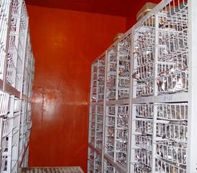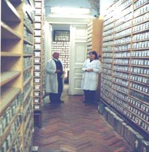
PRINCIPLES OF STORAGE
- Seed storage conditions should be dry and cool
- Effective storage pest control
- Proper sanitation in seed stores
- Before placing seeds into storage they should be dried to safe moisture limits.
- Storing of high quality seed only i.e., well cleaned treated as well as high germination and vigour.
FACTORS AFFECTING SEED LONGEVITY IN STORAGE
- Kind (or) variety of seed
- Initial seed quality
- Moisture content
- Relative humidity and temperature during storage
- Provenance
- The activity of organisms associated with seeds in storage.
- Kind or variety of seed
Seed storability is considerably influenced by the kind or variety of seeds. Some seeds are short lived. E.g.: Onion, Soybean and Groundnut. As a general rule starchy seeds can be stored considerably for a longer period compared to proteinaceous or oily seeds because of their hygroscopic nature.
- Initial seed quality
Seed lots having plumpy, vigorous undamaged seeds store longer than that of deteriorated. Even seed lots having good germination at the beginning of storage period, may deteriorate at a faster rate depending upon the severity of weathering damage, mechanical injury or otherwise in the field. The low quality seeds should invariably be rejected. Even at best storage conditions, the initial quality of the seed cannot be improved (except for the dormant seed) but can only be maintained.
- Moisture content
The most important factor influencing seed viability during storage is the moisture content and the rate of deterioration increases, as the seed moisture content increases. The drier the seed the higher will be the storage life.
Seed moisture content (%) Storage life
11-13 ½ year
10-12 1 year
9-11 2 years
8-10 4 years
It is well known that higher moisture content enhances the biological activity in the seeds and causes excessive heating, besides promoting mould and insect activities. The relationship of moisture content of seeds during post harvest stages furnished below would clearly indicate the role of moisture in the life of seeds in storage.
Role and importance of moisture content in the life of seeds
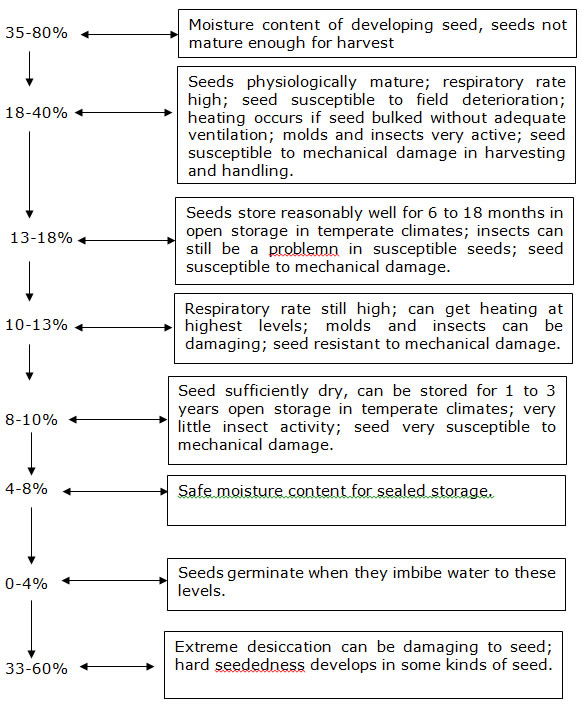
The importance of seed moisture content in extending the shelf life of seeds under ideal storage conditions can be well known and understood from the Harrington’s thumb rule, that one per cent decrease in seed moisture content nearly doubles the storage potential of the seed. Again this rule is applicable only at a moisture range of 5-14 per cent because, moisture content below 5 per cent the physio chemical reaction may take place and at above 14 per cent fungi and insects become active. Another rule given by Harrington states that for every 5oC decrease in storage temperature, the seed life will be doubled. Again this can hold good only in the temperature range of 0-50oC. There are exceptions in this rule in a few crops like chillies, brinjal and bhendi. The safe moisture content again depends upon the period of storage, storage structures, kind and variety of seed and the packaging materials used. For cereals under open storage, seed drying upto 10 per cent moisture content appears quite satisfactory. The storage in sealed containers during upto 4-8% moisture content depending upon the particular kind of seed may be necessary.
Use of desiccants
Desiccant like silicagel can maintain the moisture content in equilibrium with the Relative Humidity of 45%. It is kept @ 1kg/10 kg of seeds. When the silicagel turns to pink colour it should be dried at 1750 in oven and then again placed in the container.
4. Relative humidity and temperature during storage
Seeds are hygroscopic. They attain rather specific and characteristic moisture content when subjected to given level of atmospheric humidity at a particular temperature (equilibrium moisture content). The equilibrium moisture content for a particular kind of seed at a given relative humidity tends to increase as temperature decreases and the deterioration starts.
Equilibrium moisture content varies among seed kinds. In general, the equilibrium moisture content of “oily” seed is lower than that of “starchy” seed at the same relative humidity and temperature. This phenomenon can be accounted for by the fact that fats and oils do not mix with water. Thus, in a seed with 50% oil content, the moisture has to be concentrated in half the seed, while in a seed containing 10% oil, the moisture is distributed throughout 90% of the seed.
Thus the maintenance of moisture content of seed during storage is a function of RH and to a lesser extent of temperature. At equilibrium moisture content there is no net gain or loss in seed moisture content when seed is placed in a new environment with RH higher or lower than that of the seed, the seed will gain or lose moisture till it reaches a new equilibrium moisture content at this particular new environment.
Dry, cool conditions during storage
The general prescription for seed storage is a dry and cool environment. At this point, the question naturally arises: How dry and how cool? It is difficult to answer this question unless three factors are known: (1) kind(s) of seed to be stored; (2) desired period of storage and (3) physiological quality of the seed.
Seed of most grain crops, e.g., corn, wheat, sorghum, barley, rye, oats, rice, will maintain germination for the 8-9 months period from harvest to planting at moisture content of 12-13% and normal warehouse temperature except possibly in Southern coastal areas. For maintenance of vigour as well as germination, moisture content should not exceed 12% (relative humidity below 60%) and temperature in the warehouse should not exceed 650 F. In the case of carry-over seed, which means a storage period of 20-21 months, the moisture content of seed of grain crops should be less than 11% and temperature should not exceed 650 F. Since the period of carry-over storage encompasses atleast one summer period, temperatures and humidity control during the period is most important.
Cotton seed stores about as well as seed of grain crops, and the conditions mentioned above are applicable.
Soybeans and peanut seed are poor storers. For one year’s storage (actually 8-9 months), moisture content should be 11 to 12% and the warehouse temperature should not exceed 650F. Shelled peanuts may have to be stored in a cold room. Carry-over storage should not be attempted unless conditioned storage facilities are available: 650F and 50% relative humidity or better.
Seed of most forage grass and legume crops will store well for one year at moisture content of 10-11% at normal warehouse temperatures. When “carried-over”, moisture content should be about 10% and temperature should not exceed 65%.
Vegetable seed vary considerably among kinds in their storage requirements. Generally, however, most kinds will store well for one year at a moisture content of 9-11% and a temperature that does not exceed 650F.
When a storage period longer than 19-21 months is required, conditioned storage is essential for all kinds of seed. Most kinds of seed will maintain quality for 2-3 years when stored at 600F and 50-55% relative humidity or better. For storage longer than 3 years, conditions should be 500 F and 50% relative humidity or better.
5. Provenance
The seeds harvested in different climates (or) at different times show differences in viability. Because they would have been subjected to different pre harvest conditions which will have caused different amounts of deterioration by the time, the seeds are harvested.
6. The activity of organisms associated with seeds in storage
The bacteria, fungi, mites, insects, rodents and birds may do harm to seeds in storage. The general limits of temperature and relative humidity for the multiplication of the various biological agencies infesting stored seeds are,
Organism |
Temperature |
Relative humidity |
|
Range for multiplication |
Optimum range |
||
Insects |
21-42oC |
27-37oC |
30-95% |
It is also interesting to note that the favourable limits of temperature and RH for germination are 16-42oC and 95-100 per cent respectively.
Sanitation in storage
There are several other recognized procedures for good seed storage that most seeds men already know. Seeds should be stored in a seed warehouse, not a fertilizer, chemicals, herbicide, or feed warehouse. Good sanitation should be a continuous practice. It will minimize storage insect infestations. If storage insects are a problem, the judicious use of insecticides and fumigants, combined with sanitation, will alleviate the problem. The best procedure is not to place insect infested lots in storage with other lots unless all the insects have been killed by fumigation or insecticide treatment.
In warehouse with concrete floors, seed bags should be stacked on wooden pallets to keep them from contact with the floor as considerable moisture can be transmitted through concrete floors. Seed warehouses should also be adequately ventilated (unless they are conditioned) and protected against rodents.
Storage Conditions
Since seed moisture content and ambient relative humidity are in equilibrium during storage, maintenance of a “safe” moisture content requires an average level of relative humidity in the storage environment no higher than that in equilibrium with the “safe” or desired moisture content. This favorable situation can be achieved in only three ways: (1) location of the storage facility in a region where relative humidity does not rise – on the average – above the critical level; (2) maintenance of the relative humidity at the desired level by packaging seed in moisture vapor proof containers; or (3) dehumidification of the storage room atmosphere to the desired level. The desired level of relative humidity for successful storage of seed depends, of course on the kind of seed, the duration of the storage period, and the temperature.
SEED PACKAGING IN RELATION TO SEED STORAGE
In reality the seed package is a small storage container. The kind of container needed is affected by several factors including :
- The quantity of seed desired in each package
- The protection desired
- The cost of the package
- The value of the seed
- The storage conditions into which the container is to be placed and
- The facilities for drying the seeds
Depending upon the cost availability and the period of storage, the packaging materials are to be selected. Normally cereal seeds are being packed in cotton, jute and paper bags. Moisture vapour penetrates in these containers and they offer no protection against high relative humidity. In high humidity locations with inadequate seed storage facilities, consideration should be given to methods of packaging which can protect the seed from moisture vapour. Such moisture vapour proof containers include paper aluminium foil pouches, polyethylene bags of over 700 gauge thickness, sealed tins and gasketted rigid plastic containers. The costs of these are high, for the package of cereal seeds. Polyethylene bags have been regarded as the most attractive, because of their relatively low cost, compared to other kinds of sealed containers. Rigid plastic containers and sealed tins offer some possibility for hybrid seeds of cotton and vegetables, if the quantity needed is not great.
Classification of packing materials or containers
- Moisture and vapour pervious containers
These containers allow entry of water in the from of vapour and liquid. These are suited for short term storage. The seeds in these containers will attain seed equilibrium moisture with the surrounding atmosphere (eg) cloth bags, gunny bags, paper bags etc.
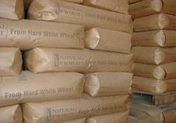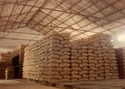
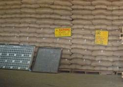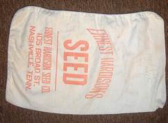
- Moisture impervious but vapour pervious containers
These allow entry of water in the form of vapour and not in liquid. The seeds in the containers can’t be carried over for long period in hot humid conditions (.g.) polythene bags of <300 gauge thickness and urea bags.
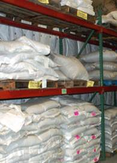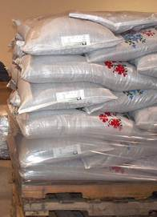
- Moisture and vapour proof containers
These containers will not allow entry of moisture in the form of liquid or vapour. These are used for long term storage even in hot humid conditions if the seeds are sealed at optimum m.c. eg. Polythylene bags of >700 gauge thickness, aluminium foil pouches, rigid plastics etc.
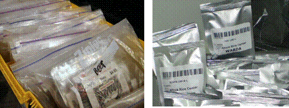
Certified seeds of cereals, pulses and oil seeds are normally packed either in gunny bags or cloth bags. However, paper bag, aluminium foil pouches and polyethylene bags are used for packing flower and vegetable seeds.
Seed storage in relation to seed deterioration
The Purpose of seed storage has been previously stated, viz., to preserve or maintain the physiological quality of seed for the period desired through minimization of the rate of deterioration. Since seed storage is basically concerned with “control” of deteriorative processes, some knowledge of these processes is essential for successful seed storage operations.
Deteriorative changes in seed and their consequences
In our consideration of some of the characteristics of deterioration in seed, another might have been added that deterioration is characterized by change. Indeed, in our context, deterioration and change – detrimental change – are almost synonymous. For deterioration is identifiable only in terms of observable or measurable changes in the response reactions of the seed. Conversely, detrimental changes, e.g., loss of germination or vigour, are said to be the result of deterioration.
In the sequence of deteriorative changes postulated in figure 1, it can be readily seen that during deterioration, the “performance potential” of seed becomes progressively impaired (reduced) until they lose their capacity to germinate, at which time “performance potential” is zero. Since loss of the capacity to germinate is the last practically significant consequence of deterioration, the design and evaluation of storage conditions only in terms of “maintenance of germination” is not sufficient. The “lesser consequences” of deterioration must also be considered because collectively they determine the “vigour” level of the seed. And, the vigour of seed determines how well they germinate, emerge, grow, and develop in the farmer’s field.
Longevity of seed is a characteristic of the species or variety
Some kinds of seed are inherently long-lived, others are short-lived, while others have an “intermediate” life span. Differences in storability extend even down to the variety level. It has been known, for example, the certain inbred lines of corn are “poor storers” and that this characteristic is inherited.
Inherent differences in seed longevity are facts, the seeds man must accept and contend with as best he can. Among the vegetables, onion seed are notoriously short-lived, radish seed are intermediate in longevity, and watermelon seed are relatively long-lived. Soybean and peanut seed do not store well as compared to seed of wheat, corn, cotton, sorghum and rice. In some cases, seed kinds which have very similar chemical and physical properties differ substantially in longevity. Tall fescue and annual ryegrass seed are similar in structure, chemical composition, and yet, ryegrass seed store better than tall fescue seed.
Possible Sequence of changes in seed during deterioration
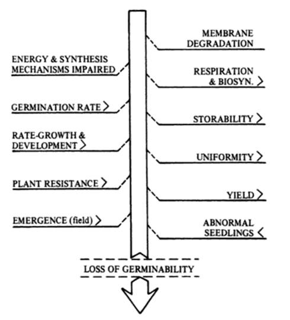
Seed selection for extended storability
- Store well mature seeds.
- Store normal coloured seeds
- Seeds should be free from mechanical injury
- Seeds should not have met with adverse conditions during maturation
- Seeds should be dried to optimum moisture content.
- Seeds should be treated with fungicides before storage.
- Suitable packaging materials should be used for packing.
High quality seed store better than low quality seed
The storage potential of seed is greatly affected by their quality at the time they enter storage, or their pre-storage history. The pre storage history of a seed lot encompasses all the “events” in the “life” of the seeds from the time functional maturity is reached until they are placed in storage.
Seeds are highest in quality at the time functional maturity is attained. Since most kinds of seed reach maturity at moisture contents too high for mechanical harvest, the seeds are subjected to the field environment from maturation to harvest. The post-maturation pre-harvest period normally ranges from 1 to 4 weeks for the different kinds of seed. Adverse climatic conditions can result in rapid and severe deterioration of the seed, and so on. The degree of deterioration that occurs in seed prior to harvest determines their quality at harvest and conditions their performance in storage.
In like manner, mechanical, abuse to seed associated with harvesting, handling and processing operations, and damage caused by inadequate or improper aeration or drying can have both immediate and residual effects, i.e., performance of the seed might be affected at the time of injury or not until some later time during storage.
In characterizing seed deterioration, we pointed out that the rate of deterioration of seed in storage varies among seed lots of the same kind and among individual seeds within a lot. These variations in storability are, of course, related to the pre-storage history of seed lots. Seed lots with a “good” pre-storage history (minimal field deterioration, mechanical damage, etc.) store well, while those with a “bad” pre-storage history store poorly.
STORAGE GODOWNS AND THEIR MAINTENANCE
Seeds undergo deterioration due to aging in storage. This is accelerated by climatic factors and external biotic factors like insects and pathogen. In addition to seed borne pathogen and storage insects, seeds are damaged by birds and rats for their feed. Clean and hygienic godowns protect the seed from external insects and preserve the seed. Hence care should be taken in construction of godown. The points to be noted are as follows.
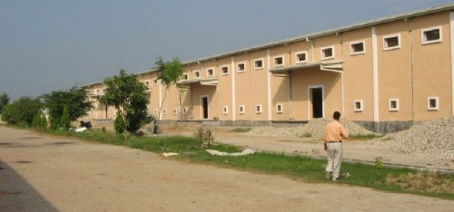
- Seed godown should be in a place where transport facilities are easily available.
- Seed godowns should not be constructed in areas near seashore. Since the high RH of atmospheric air accelerate the deterioration of seed.
- Seed godown should not be constructed in low lying water stagnating areas.
- Seed godown should be constructed in places where atmospheric RH is low, free circulation of air is possible, sunlight is adequate and elevated in nature.
- The ventilators should be at bottom for free air circulation.
- Ground moisture should not reach the floor.
- Should be rat proof with wire mesh
- Should not be near industries as smoke is injurious
In maintenance of seed in godown following points are to be considered.
- Godown should be clean and dry
- Seed bags should not be stacked directly on floor. Should be stacked on wooden ballets.
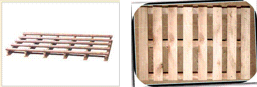
- The height of the stack should not be more than 6-8 bags.
- Different seed lot should be kept separately.
- Godown should be sprayed periodically once in a week or fortnightly with Malathion 50 EC (1 : 300 Chemical : Water) @ 5 lit. sq. m-1 or 0.25% Nuvan @ 1 lit. 100 m3-1.
- Altering the chemicals at weekly intervals will give better control.
- Seed lots can be fumigated with Aluminium phophide @ 3 gm/cu.m in air tight condition for 7 days. This can be done as propylatic measure and on minimum infestation by insects.
- Seed lots should be periodically (once in month) tested for seed quality.
- Based on seed testing result, seeds can be dried under sun for the removal of moisture. It reduces insect and pathogen infestation.
- New seed lots should be kept away from old seed lots to avoid secondary infestation of insects.
- Seeds should be treated with combination of fungicide and insecticide (eg.) Thiram @ 2 g kg-1 + carbaryl @ 200 mg kg-1.
- Frequent supervision of each and every lot is must.
- Seed bag should be restacked once in 3 months for free aeration.
- Instead of gunny bags low cost interwoven polythene bags should be used to prolong the life of seed.
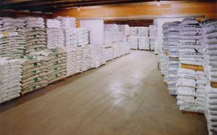
- Pesticides, fungicides, fertilizers, rejects should not be stored with seed.
- Each lot should be labeled accurately and registers for stocks should be maintained.
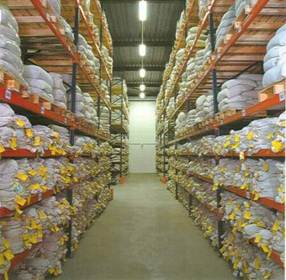
- Per acre or per hectare packing (small) is preferable for easy handling and effective supervision.
STORAGE INSECT MANAGEMENT
Maintenance of store house hygiene
- Cracks and crevices around corners have to be brushed to eliminate hiding pests. All debris should be removed. Provision of wire meshes to windows, ventilators, gutters, drains to prevent entry of rats, squirrels, birds, etc.
- Reduce the moisture content of seed to prevent insect build up (usually below 10%). Previously used bags, bins, etc. should be dried in the sun repeatedly.
- Elimination of conditions which favour storage pests. Uniformly graded seeds should be used, broken seeds should be removed before bagging since they favour pest build up. Stitching of all torn bags, filling bags up to the brim, no loose packing.
- Surface treatment of storehouse before storage with malathion dust 4% @ 25 g/sq m or malathion 50% EC spray @ 10 ml/lit of water and 3 lit of solution per sq. metre.
- Good dunnage by arranging wooden planks or bamboo poles or spreading thick polythene sheets on the floor. Treatment of dunnage materials with malathion as specified, arrange the bags in criscross pattern with a maximum of 15 bags and provide adequate space between the roof and the seed bags.
Prophylatic treatment of seeds
Application of malathion 4 per cent dust 25 g/sq metre or malathion 50 per cent EC 10 ml per litre of water and 3 litres of spray solution for 100 sq.m. The chemicals have to be sprayed on the walls and floors and the treatment has to be repeated based on the extent of flying and crawling insects.
Chemicals
Two chemicals are widely used : Phosphine and Methyl Bromide. Others are dichlorvos, Carbondioxide, Ethylene oxide and HCN.
Phosphine : Available in a solid form (0.6 g pellets, 3 g tablets). The active ingredient is Aluminium phosphide mixed with Ammonium carbonate and Paraffin. After exposure to the atmosphere, the pellets decompose and release the active substance, hydrogen phosphide (PH3), which has the same specific weight as air, and is thus evenly distributed in the fumigated material or chamber. Phosphine is also able to penetrate bags, carton boxes and other containers.
It must be borne in mind that fumigation particularly repeated fumigation, may seriously reduce the vigour and viability. This is particularly true for seeds with a higher moisture content of 14 per cent. Seeds with moisture content above 14 per cent should be dried, before fumigation.
Samples of seeds have to be drawn at fortnight intervals and the infestation can be classified as follows based on insects found per kg of sample.
When there is no pest Free
Upto 2 insects Mild
More than 2 insects Severe
The fumigant has to be chosen and the requirement worked out on the following guidelines :
Aluminium phosphide: Three tablets of 3 g each per ton of seed for cover fumigation (only selected blocks of bags)
Twenty one tablets of 3g each for 28 cubic metres, for shed fumigation (entire godown). Period of fumigation - 5 days. The major advantages of Phostoxin are that it lacks residues and does not affect flavor or germination and is easy to handle.
Methyl bromide: Above 5.6oC, methyl bromide is in the gas phase and is available in cylinders similar to those used for cooking gas. Since, it is odorless, other gases such as chloropicrin are sometimes added to facilitate detection of leaks. Because methyl bromide is 3.5 times heavier than air, care has to be taken that it is properly distributed within the goods to be fumigated (fan can be used). The recommended dosage is 20 g/m3 for 24-48 hrs.
Special safety measures are required, since methyl bromide is absorbed through the skin. It tends to accumulate in commodities which are important whenever repeated fumigation is necessary.
Equipment
Gas-proof plastic sheets with at least 50 cm overlap firmly pressed to the ground with sand, iron bars, or other weights are frequently used. Gas escape results in reduced insecticidal effect and is a hazard to users. A cement floor is necessary to prevent gas escape through soil. Care must be taken that the fumigation area is properly aerated and fans sometimes help.
If a store’s door and windows can be hermetically sealed, fumigation of the entire store is possible. Most stores, however, allow gas to escape through other openings. Silos are usually good fumigation facilities. When large quantities must be fumigated within a short time, a vaccum fumigation chamber is appropriate. These chambers are available in sizes between 1 and 50 m3, and sometimes as a plant of upto 6 x 50 m3, equipped with common fans, pumps and other equipment. The insecticides used are methyl bromide or ethylene oxide.
Safety
Face masks with a proper canister should be used, especially during the aeration process. When handling Phostoxin, cotton gloves should be worn. Gas concentration can be checked with a Halide gas detector for methyl bromide and with a tube detector (Draeger) for Phostoxin. A warning sign should be clearly visible to prevent people from inadvertently removing plastic sheets or entering a building under fumigation.
Rodent Management in Store Houses
Provide of wire mesh to windows, ventilators, drains and leave no gaps to doors. Use rodent baits with multi dose or anticoagulant rodenticides. The bait may be prepared as follows:
Cereal flour 450 g
Any edible oil 10 g
Powdered jaggery 15 g
Anticoagulant or rodenticide such as coumarin 25 g
Replace the consumed bait daily. If needed the single dose or acute poison bait may be prepared as follows :
Food material 97 g
Edible oil 1 g
Zinc phosphide 2 g
Before providing the poisoned zinc phosphide bait, the plain or non-poisoned bait are to be provided for two or three days to make the rats accept the bait.
| Download this lecture as PDF here |